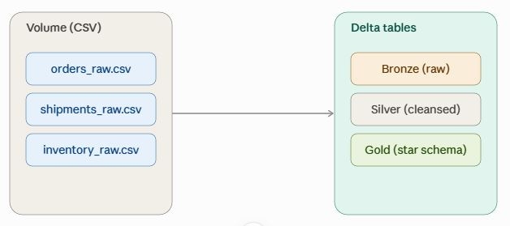
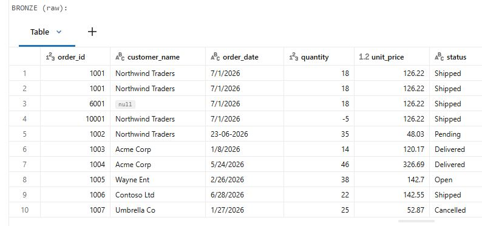
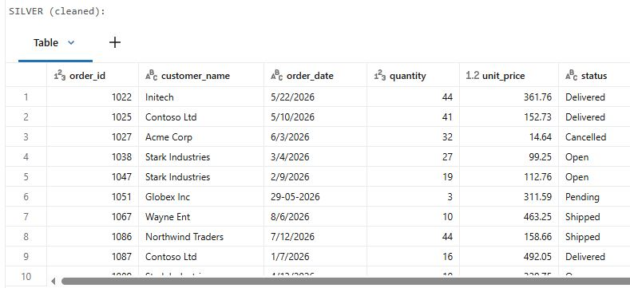
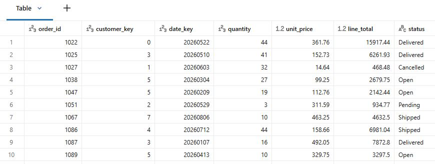
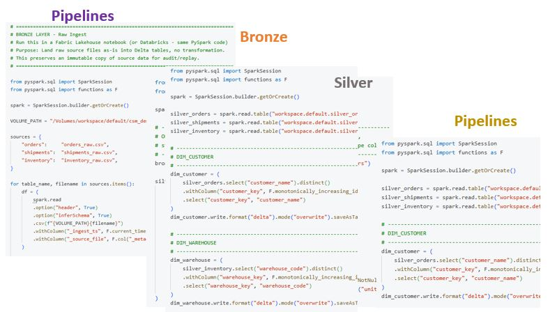
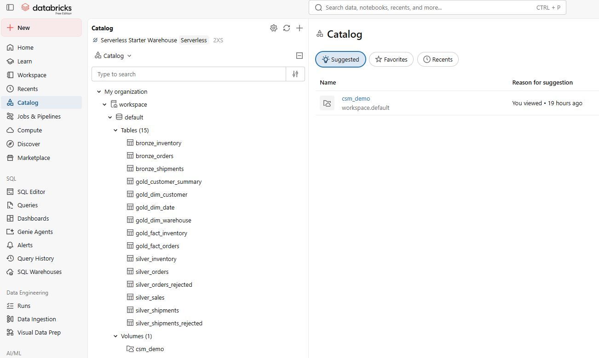
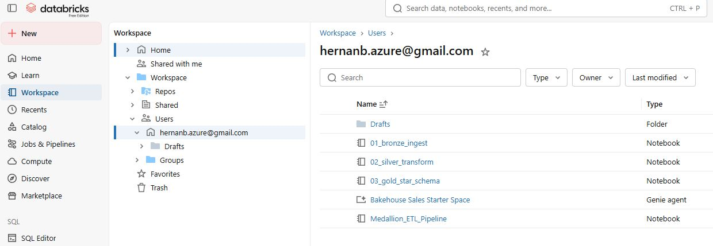

1. Project Overview
This project demonstrates an end-to-end analytical data solution using inventory, order, and shipment datasets. The implementation applies PySpark transformations and Delta tables within a Medallion-style architecture to organize operational data into structured, analytics-ready datasets.
The solution focuses on data quality, consistent business attributes, and dimensional modeling to support supply chain visibility and operational analysis.
2. Business Requirements
Supply chain teams need reliable information across inventory, customer orders, and warehouse shipments. This solution organizes those data domains to support questions such as:
- Inventory: What quantities are on hand, and which items are below their reorder points?
- Orders: What order quantities and values are being processed, and what is the current order status?
- Shipments: Which warehouse shipments are represented in the operational data?
- Data quality: Are dates, quantities, customer information, and warehouse identifiers valid and consistent?
- Analysis: How can operational records be organized to support reporting and business analysis?
3. Data Sources
The solution uses three operational CSV source files:
- Inventory: SKU, warehouse, category, quantity on hand, reorder point, and update date.
- Orders: Order identifier, customer, order date, quantity, unit price, and status.
- Shipments: Shipment records, warehouse code, and shipment date.
The source files are ingested into the Bronze layer, preserving source values while adding ingestion timestamp and source-file metadata.

4. Solution Architecture — Medallion Architecture
The data is organized into three logical layers. Each layer has a distinct role in moving operational source data toward structured analytical datasets.
Bronze — Raw Ingestion
Loads the inventory, orders, and shipments CSV files into Delta tables. Adds ingestion timestamp and source-file metadata while retaining the original source values.
Silver — Cleansing & Validation
Standardizes dates and warehouse codes, removes duplicate order records, applies data-quality rules, and separates rejected order and shipment records for review.
Gold — Analytical Data Model
Creates customer, warehouse, and date dimensions together with order and inventory fact tables for analytical use.



5. Data Transformation & Quality Controls
Bronze — Source Ingestion
- Reads the three source CSV files with headers and schema inference.
- Writes the source datasets as Delta tables:
bronze_orders,bronze_shipments, andbronze_inventory. - Adds
_ingest_tsand_source_filemetadata columns.
Silver — Data Cleansing and Validation
- Standardizes order dates from multiple incoming date formats.
- Flags non-positive order quantities and missing customer names.
- Removes duplicate order records using order and transaction attributes.
- Writes valid order records to
silver_ordersand rejected records tosilver_orders_rejected. - Normalizes shipment warehouse codes and validates their format; rejected records are written separately.
- Flags negative inventory quantities and identifies inventory below its reorder point.
Gold — Dimensional Modeling
- Builds customer, warehouse, and date dimensions.
- Creates an order fact table at order-line grain.
- Creates an inventory snapshot fact table at SKU-by-warehouse grain.
- Stores the resulting analytical structures as Delta tables.

6. Analytical Data Model
The Gold layer organizes the processed data into fact and dimension tables. This structure separates measurable business activity from descriptive attributes used to analyze that activity.
Dimension Tables
gold_dim_customer— customer key and customer name.gold_dim_warehouse— warehouse key and warehouse code.gold_dim_date— date key, date, year, month, month name, and quarter.
Fact Tables
-
gold_fact_orders— one row per order line, including order identifier, customer key, date key, quantity, unit price, line total, and status. -
gold_fact_inventory— one row per SKU per warehouse, including category, quantity on hand, reorder point, and below-reorder-point indicator.
These structures provide a foundation for analyzing order activity, inventory levels, customer activity, and warehouse-level inventory. The supplied Gold implementation does not create a shipment fact table; shipment data is currently used in Silver processing and date-dimension generation.

7. Supply Chain KPIs & Business Metrics
The following metrics illustrate how the analytical model can support supply chain reporting. They are business metric definitions and potential reporting measures, not a claim that every KPI was calculated in the supplied PySpark implementation.
| Metric | Business Definition | Analytical Purpose |
|---|---|---|
| Inventory on Hand | Sum of inventory quantities on hand. | Monitor stock availability. |
| Items Below Reorder Point | Count of SKU-warehouse records where quantity on hand is below the reorder point. | Identify potential replenishment needs. |
| Order Quantity | Sum of quantities across order lines. | Understand order demand and volume. |
| Order Value | Sum of order-line totals (quantity multiplied by unit price). | Monitor the monetary value of order activity. |
| Orders by Status | Count of orders or order lines grouped by status. | Monitor order processing activity. |
Shipment volume and on-time delivery can also be useful supply chain measures when the relevant shipment quantity, promised-date, and delivery-date fields are available and included in the reporting model.
8. Implementation Evidence
The following screenshots document the project environment, data catalog, Medallion layers, and pipeline-related implementation evidence.

9. Pipeline Orchestration Design
A sequential orchestration pattern can coordinate the Bronze, Silver, and Gold processing stages. Each downstream activity should run only after the preceding stage completes successfully, helping prevent incomplete upstream processing from flowing into analytical tables.
This sequence represents the documented orchestration design. The supplied notes describe configuring it in Microsoft Fabric; they do not establish that a scheduled Fabric pipeline or Power BI dataset refresh was deployed as part of the Databricks implementation.
10. Business Value
- Provides a structured view of inventory, order, and shipment source data.
- Improves data consistency through standardization and validation rules.
- Makes rejected records visible for review rather than silently discarding them.
- Creates reusable analytical tables for order and inventory reporting.
- Establishes a foundation for supply chain KPIs and operational decision support.